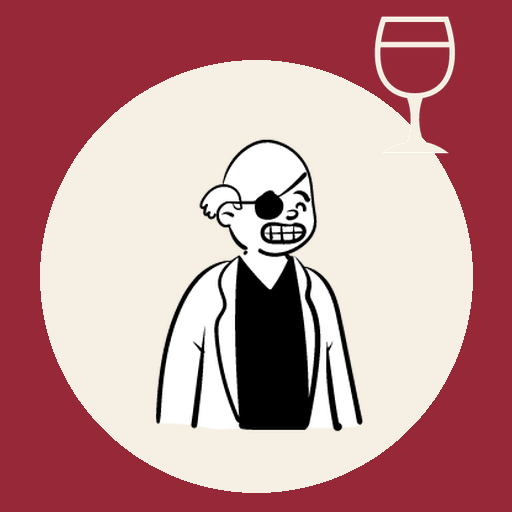

<- all projects

Final Course
PC
Volume
Live
Seven courses. Eight guests. One killer at the table. Question, deduce, accuse.
A black card invites you, a former detective, to dinner on a private island: seven courses, eight guests, signed only 'The Chef'. Before the soup is served, the host drops dead. Every course begins with a body and a clue, and between courses you get three questions. Honest guests tell the truth, the killer lies about where they were and a thief lies for reasons of their own. Catch the alibi that does not hold, then accuse. There are seven written dinners leading to the Chef, endless generated dinner parties, a daily dinner and a notebook that logs every statement.